Week no. 6
Electronics Design :
-
Redraw the echo hello-world board;
-
Add at least a button and LED (with current-limiting resistor)
-
Check the design rules, make it, an test it.
Redraw the Echo Hello-World Board
To iniciate this week's work we started by reading this tutorial:
http://archive.fabacademy.org/archives/2017/doc/electronics_design_eagle.html#step4
- First step: Download and Install Eagle;
- Second step: Download the Hello Echo schematic and board files;
- Third step: Download and Install the Libraries.
After reading the tutorial and done this tree steps i'm ready to start this assignment!
Create new project-Right click on the created project and create new schematic.
Adding the components from the fab library is straight forward process.
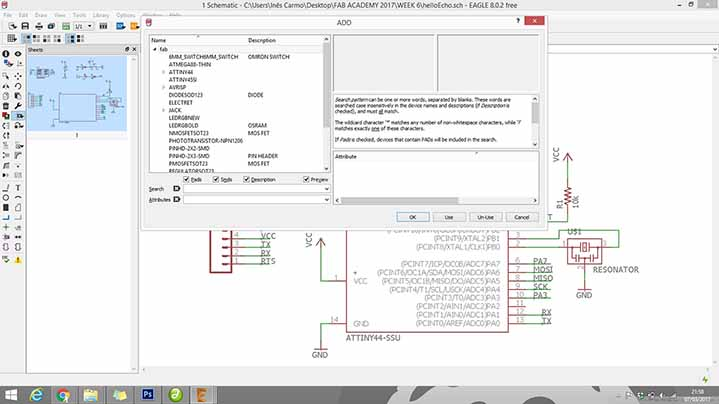
Parts that are already on the Hello Echo Board:
6-pin programming header: for programming the board
microcontroller: attiny44A. Once the microcontroller is programmed,
the program stored in non-volatile memory. This means that it will remember the program.
FTDI header: powers the board and allows board to talk to computer
20MHz resonator: external clock. The attiny has a 8Mhz clock but the resonator is faster
(increase the clock speed of the processor) and more accurate.
The components to the schematic:
Resistor (value 10k)
Button (OMERON switch)
Ground
VCC
connect pin 10 (PA3) on the microcontroller to the button
LED (Light Emitting Diode)
Resistor (current limiting resistor)
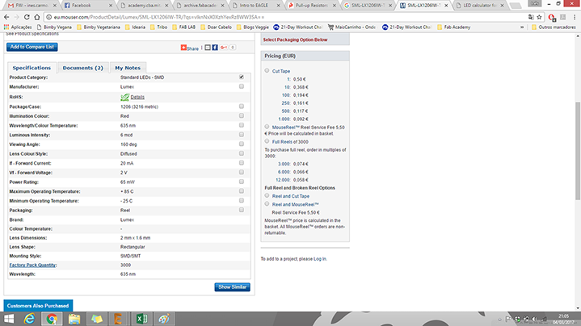
To the LED i choose i need to use a 150 ohm resistor or above to avoid blowing out the LED.
I chose to use a 499 ohm resistor, because is the one that i have most in the lab.
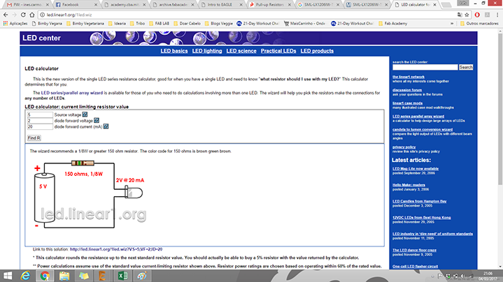
When the components are placed on the schematic, its time to start connecting them by using the Net tool.
If the wiring becomes too crowded, you can use name tool to label the wires and connect them that way.
Similarly named wires are connected in the board layout.
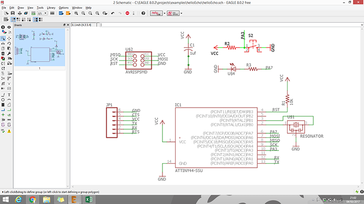
Once the layout is ready, switch to the board view (File-switch to board).
Next, we need to place the components inside the defined board area and then design the wiring on the board.
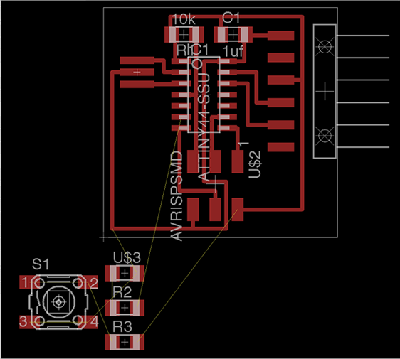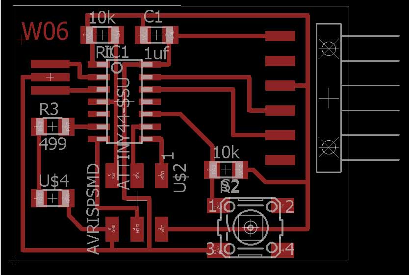
The final step is to make the board export ready.In layers menu in the top toolbar,
wee need to
select the only the top layer (traces only).
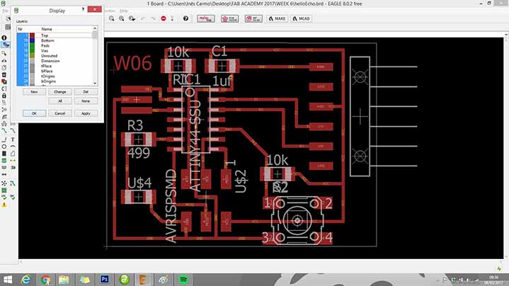 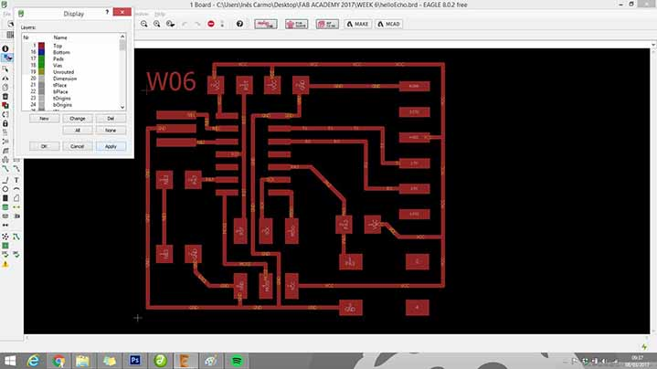
Then we need to export as a png (file-export-image)
with the settings should:
MONOCHROME
500 DPI
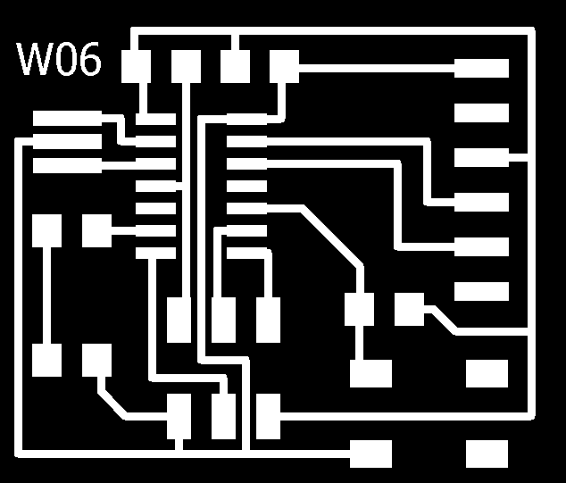
You can have my files here.
Milling and Stuffing
To this part of the assignment i used tha fab modules to generate the traces .rml code and the VPanel to control the MDX40 machine.
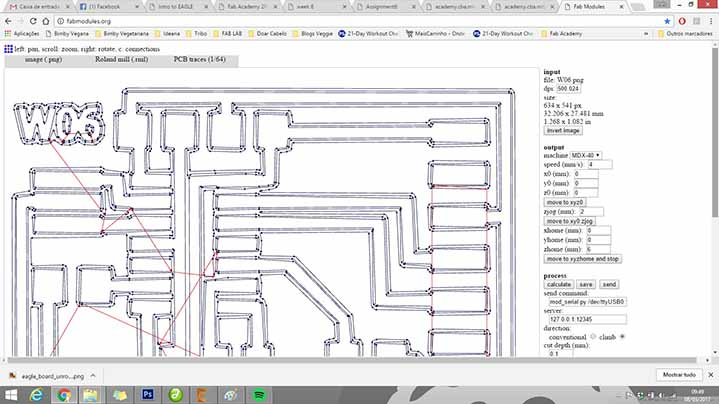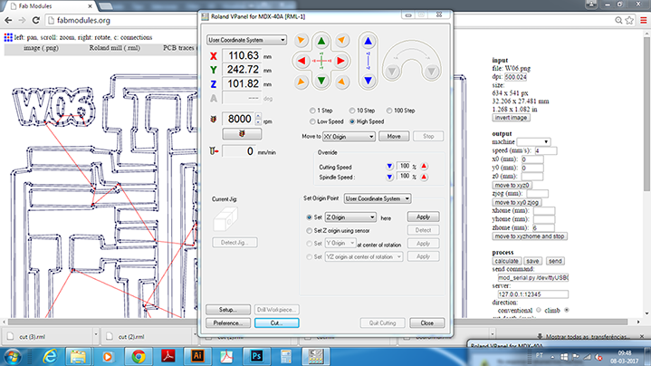
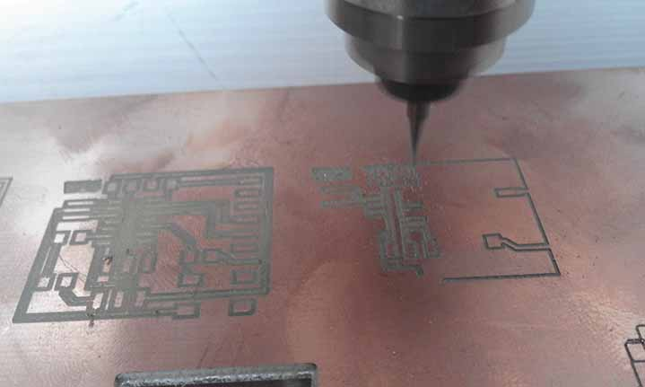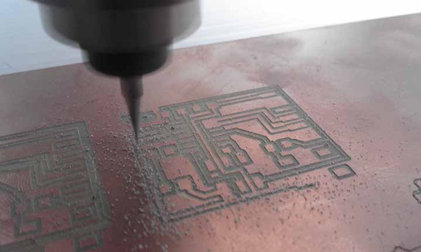
Then ichanged the tool and repeated the same process to do the cut, first i imported the .png file to the fab modules,
{kind=link}
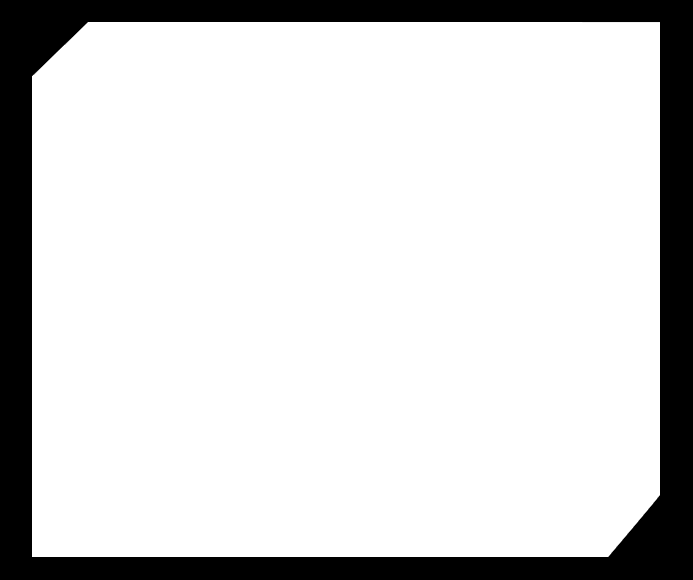
generated the cut .rml code and imported to the Vpanel of the MDX40 to proced to the cut.
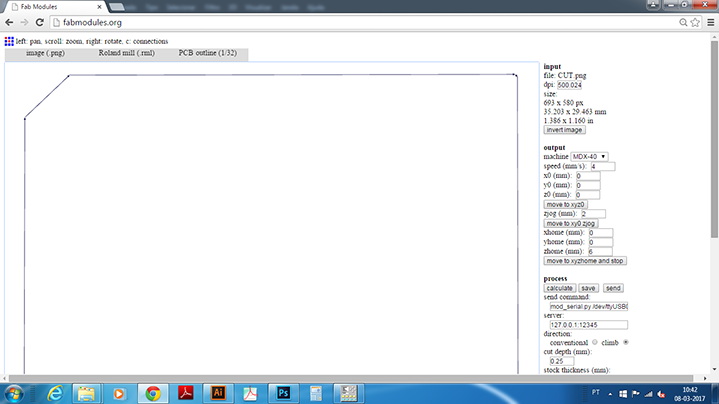 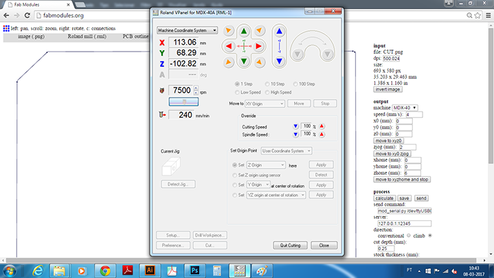
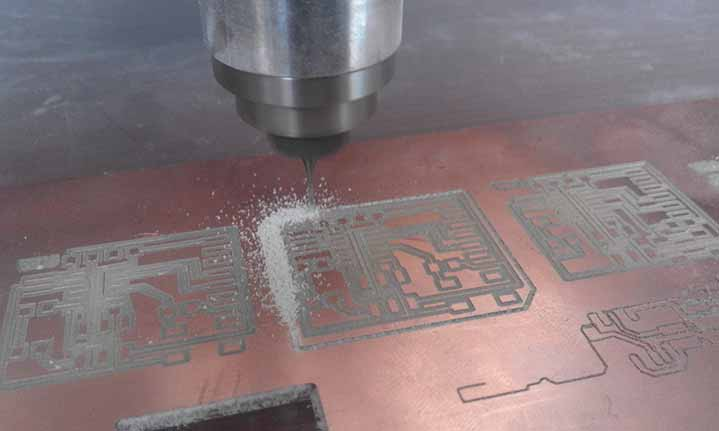
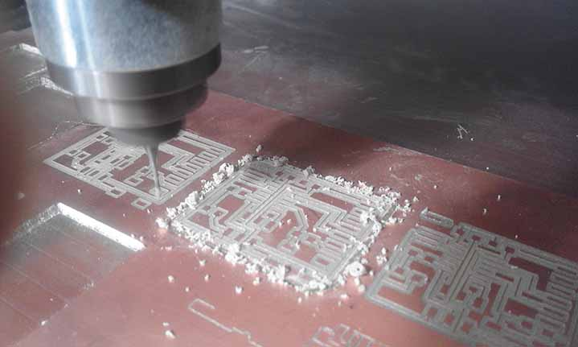 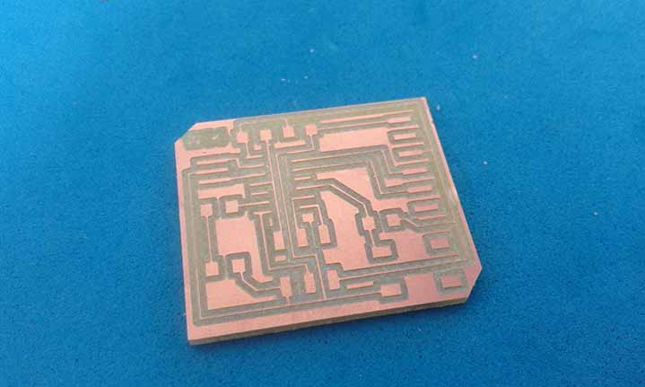
Testing
......